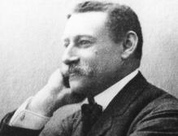

<html>
          <head>
            <meta charset="utf-8">
            <script type="text/javascript" src="https://www.gstatic.com/charts/loader.js"></script>
            <script type="text/javascript">                     
              google.charts.load('current', {packages:["orgchart"]});
              google.charts.setOnLoadCallback(drawChart);

              function drawChart() {
                var data = new google.visualization.DataTable();
                data.addColumn('string', 'Name');
                data.addColumn('string', 'Manager'); 
                data.addColumn('string', 'ToolTip');

                // For each orgchart box, provide the name, manager, and tooltip to show.
                data.addRows([[{v: '100000000000000|1632|100000000000001|#|François GUILLOT (1632 - 1686) & Huguette CHOUARD (# - 1688)|1', f:'François GUILLOT (1632 - 1686) & Huguette CHOUARD (# - 1688)<div class="plus"></div>'}, '', 'AAAA'],[{v: '100000000000000|1632|100000000000001|#|François GUILLOT (1632 - 1686) & Huguette CHOUARD (# - 1688)|1', f:'François GUILLOT (1632 - 1686) & Huguette CHOUARD (# - 1688)<div class="plus"></div>'}, '100000000000000|1632|François GUILLOT (1632 - 1686)', ''],[{v: '110000000000000|1660|110000000000001|1663|Edme GUILLOT (1660 - 1720) & Philiberte PARENT (1663 - 1739)|1', f:'Edme GUILLOT (1660 - 1720) & Philiberte PARENT (1663 - 1739)<div class="plus"></div>'}, '110000000000000|1660|Edme GUILLOT (1660 - 1720)', ''],[{v: '111000000000000|1694|111000000000001|1691|François GUILLOT (1694 - 1758) & Barbe CHAUSSON ou CHAUFFON (1691 - 1769)|5', f:'François GUILLOT (1694 - 1758) & Barbe CHAUSSON ou CHAUFFON (1691 - 1769)<div class="plus"></div>'}, '111000000000000|1694|François GUILLOT (1694 - 1758)', ''],[{v: '111300000000000|1725|111300000000001|?|François GUILLOT (1725 - 1795) & Marie DOISTOT ou DOISTEAU (? - ?)|3', f:'François GUILLOT (1725 - 1795) & Marie DOISTOT ou DOISTEAU (? - ?)<div class="plus"></div>'}, '111300000000000|1725|François GUILLOT (1725 - 1795)', ''],[{v: '111330000000000|1764|111330000000001|1768|Jean GUILLOT (1764 - 1838) & Marie  SOUFFLARD (1768 - 1802)|9', f:'Jean GUILLOT (1764 - 1838) & Marie  SOUFFLARD (1768 - 1802)<div class="plus"></div>'}, '111330000000000|1764|Jean GUILLOT (1764 - 1838)', ''],[{v: '111330000000000|1764|111330000000002|1781|Jean GUILLOT (1764 - 1838) & Marie Anne DUVEAU ou DUVAUX (1781 - 1854)|9', f:'Jean GUILLOT (1764 - 1838) & Marie Anne DUVEAU ou DUVAUX (1781 - 1854)<div class="plus"></div>'}, '111330000000000|1764|Jean GUILLOT (1764 - 1838)', ''],[{v: '111333000000000|1811|111333000000001|1803|Hippolyte GUILLOT (1811 - 1880) & Marie Félicité  GODARD (1803 - 1877)|2', f:'Hippolyte GUILLOT (1811 - 1880) & Marie Félicité  GODARD (1803 - 1877)<div class="plus"></div>'}, '111333000000000|1811|Hippolyte GUILLOT (1811 - 1880)', ''],[{v: '111333100000000|1841|111333100000001|1844|Hippolyte GUILLOT (1841 - 1904) & Louise Léonie BUCHY (1844 - 1871)|3', f:'Hippolyte GUILLOT (1841 - 1904) & Louise Léonie BUCHY (1844 - 1871)<div class="plus"></div>'}, '111333100000000|1841|Hippolyte GUILLOT (1841 - 1904)', ''],[{v: '111333100000000|1841|111333100000002|1854|Hippolyte GUILLOT (1841 - 1904) & Joséphine MOREAU (1854 - ??)|3', f:'Hippolyte GUILLOT (1841 - 1904) & Joséphine MOREAU (1854 - ??)<div class="plus"></div>'}, '111333100000000|1841|Hippolyte GUILLOT (1841 - 1904)', ''],[{v: '111333110000000|1868|111333110000001|?|Fernand Achille GUILLOT (1868 - 1923) & Bernadine WILMS (? - ?)|1', f:'Fernand Achille GUILLOT (1868 - 1923) & Bernadine WILMS (? - ?)<div class="plus"></div>'}, '111333110000000|1868|Fernand Achille GUILLOT (1868 - 1923)', ''],[{v: '111333110000000|1868|111333110000002|?|Fernand Achille GUILLOT (1868 - 1923) & Françoise Pauline CHAS (? - ?)|1', f:'Fernand Achille GUILLOT (1868 - 1923) & Françoise Pauline CHAS (? - ?)<div class="plus"></div>'}, '111333110000000|1868|Fernand Achille GUILLOT (1868 - 1923)', ''],[{v: '111333111000000|1902|111333111000001|1902|Fernande GUILLOT (1902 - 1969) & Célestin ROCHEFORT (1902 - 1985)|1', f:'Fernande GUILLOT (1902 - 1969) & Célestin ROCHEFORT (1902 - 1985)<div class="plus"></div>'}, '111333111000000|1902|Fernande GUILLOT (1902 - 1969)', ''],[{v: '111333120000000|1879|111333120000001|1879|Maurice GUILLOT (1879 - 1936) & Marie Berthe DUTILLET (1879 - 1914)|1', f:'Maurice GUILLOT (1879 - 1936) & Marie Berthe DUTILLET (1879 - 1914)<div class="plus"></div>'}, '111333120000000|1879|Maurice GUILLOT (1879 - 1936)', ''],[{v: '111333121000000|1908|111333121000001|1917|André GUILLOT (1908 - 1993) & Suzanne  ETIENVRE (1917 - 1994)|4', f:'André GUILLOT (1908 - 1993) & Suzanne  ETIENVRE (1917 - 1994)<div class="plus"></div>'}, '111333121000000|1908|André GUILLOT (1908 - 1993)', ''],[{v: '111333121100000|1935|111333121100001|1936|André GUILLOT (1935 - 2003) & Monique VILLATE (1936)|3', f:'André GUILLOT (1935 - 2003) & Monique VILLATE (1936)<div class="plus"></div>'}, '111333121100000|1935|André GUILLOT (1935 - 2003)', ''],[{v: '111333121100000|1935|111333121100002| |André GUILLOT (1935 - 2003) & Marie-Françoise   ( )|3', f:'André GUILLOT (1935 - 2003) & Marie-Françoise   ( )<div class="plus"></div>'}, '111333121100000|1935|André GUILLOT (1935 - 2003)', ''],[{v: '111333121110000|1963|111333121110001|  |Olivier GUILLOT (1963) & Virginie RENARD (  )|2', f:'Olivier GUILLOT (1963) & Virginie RENARD (  )<div class="plus"></div>'}, '111333121110000|1963|Olivier GUILLOT (1963)', ''],[{v: '111333121120000|1971|111333121120001|  |Elodie GUILLOT (1971) & Lionel CHALENDAR (  )|1', f:'Elodie GUILLOT (1971) & Lionel CHALENDAR (  )<div class="plus"></div>'}, '111333121120000|1971|Elodie GUILLOT (1971)', ''],[{v: '111333121200000|1938|111333121200001|1937|Micheline GUILLOT (1938) & Albert DE NEUVILLE (1937)|4', f:'Micheline GUILLOT (1938) & Albert DE NEUVILLE (1937)<div class="plus"></div>'}, '111333121200000|1938|Micheline GUILLOT (1938)', ''],[{v: '111333121210000|1961|111333121210001|1952|Florence DE NEUVILLE (1961) & Serge CARIVEN (1952)|2', f:'Florence DE NEUVILLE (1961) & Serge CARIVEN (1952)<div class="plus"></div>'}, '111333121210000|1961|Florence DE NEUVILLE (1961)', ''],[{v: '111333121230000|1964|111333121230001|1961|Catherine DE NEUVILLE (1964) & Ali ZEKRINI (1961)|2', f:'Catherine DE NEUVILLE (1964) & Ali ZEKRINI (1961)<div class="plus"></div>'}, '111333121230000|1964|Catherine DE NEUVILLE (1964)', ''],[{v: '111333121231000|1990|111333121231001|1989|Alexandre ZEKRINI (1990) & Céline FLEGEO (1989)|1', f:'Alexandre ZEKRINI (1990) & Céline FLEGEO (1989)<div class="plus"></div>'}, '111333121231000|1990|Alexandre ZEKRINI (1990)', ''],[{v: '111333121240000|1966|111333121240001|1972|Albert DE NEUVILLE (1966) & Nathalie DENIS (1972)|1', f:'Albert DE NEUVILLE (1966) & Nathalie DENIS (1972)<div class="plus"></div>'}, '111333121240000|1966|Albert DE NEUVILLE (1966)', ''],[{v: '111333121300000|1943|111333121300001|1942|Daniel GUILLOT (1943) & Suzanne MARCROFT (1942)|3', f:'Daniel GUILLOT (1943) & Suzanne MARCROFT (1942)<div class="plus"></div>'}, '111333121300000|1943|Daniel GUILLOT (1943)', ''],[{v: '111333121310000|1971|111333121310001|1968|Isabelle GUILLOT (1971) & Jeff GRANNIS (1968)|2', f:'Isabelle GUILLOT (1971) & Jeff GRANNIS (1968)<div class="plus"></div>'}, '111333121310000|1971|Isabelle GUILLOT (1971)', ''],[{v: '111333121400000|1949|111333121400001|1952|Dominique GUILLOT (1949) & Hélène MIERMONT (1952)|2', f:'Dominique GUILLOT (1949) & Hélène MIERMONT (1952)<div class="plus"></div>'}, '111333121400000|1949|Dominique GUILLOT (1949)', ''],[{v: '111333121420000|1977|111333121420001|1978|Benjamin GUILLOT (1977) & Page MARTIN (1978)|2', f:'Benjamin GUILLOT (1977) & Page MARTIN (1978)<div class="plus"></div>'}, '111333121420000|1977|Benjamin GUILLOT (1977)', ''],[{v: '111333130000000|1888|111333130000001|?|Fernande GUILLOT (1888 - 1970) & Jean  CHAS (? - 1952)|1', f:'Fernande GUILLOT (1888 - 1970) & Jean  CHAS (? - 1952)<div class="plus"></div>'}, '111333130000000|1888|Fernande GUILLOT (1888 - 1970)', ''],[{v: '111333200000000|1844|111333200000001|?|Achille GUILLOT (1844 - 1908) & Françoise FENIQUET (? - ?)|1', f:'Achille GUILLOT (1844 - 1908) & Françoise FENIQUET (? - ?)<div class="plus"></div>'}, '111333200000000|1844|Achille GUILLOT (1844 - 1908)', ''],[{v: '111333210000000|1873|111333210000001|1877|Jules Achille GUILLOT (1873 - ??) & Marie Angelle DUTILLET (1877 - 1937)|1', f:'Jules Achille GUILLOT (1873 - ??) & Marie Angelle DUTILLET (1877 - 1937)<div class="plus"></div>'}, '111333210000000|1873|Jules Achille GUILLOT (1873 - ??)', ''],[{v: '110000000000000|1660|Edme GUILLOT (1660 - 1720)', f:'Edme GUILLOT (1660 - 1720)<div class="plus"></div>'}, '100000000000000|1632|100000000000001|#|François GUILLOT (1632 - 1686) & Huguette CHOUARD (# - 1688)|1', ''],[{v: '111000000000000|1694|François GUILLOT (1694 - 1758)', f:'François GUILLOT (1694 - 1758)<div class="plus"></div>'}, '110000000000000|1660|110000000000001|1663|Edme GUILLOT (1660 - 1720) & Philiberte PARENT (1663 - 1739)|1', ''],[{v: '111100000000000|1721|Edme GUILLOT (1721 - ?)', f:'Edme GUILLOT (1721 - ?)<div class="plus"></div>'}, '111000000000000|1694|111000000000001|1691|François GUILLOT (1694 - 1758) & Barbe CHAUSSON ou CHAUFFON (1691 - 1769)|5', ''],[{v: '111200000000000|1723|Françoise GUILLOT (1723 - ?)', f:'Françoise GUILLOT (1723 - ?)<div class="plus"></div>'}, '111000000000000|1694|111000000000001|1691|François GUILLOT (1694 - 1758) & Barbe CHAUSSON ou CHAUFFON (1691 - 1769)|5', ''],[{v: '111300000000000|1725|François GUILLOT (1725 - 1795)', f:'François GUILLOT (1725 - 1795)<div class="plus"></div>'}, '111000000000000|1694|111000000000001|1691|François GUILLOT (1694 - 1758) & Barbe CHAUSSON ou CHAUFFON (1691 - 1769)|5', ''],[{v: '111310000000000|1757|Marie GUILLOT (1757 - ?)', f:'Marie GUILLOT (1757 - ?)<div class="plus"></div>'}, '111300000000000|1725|111300000000001|?|François GUILLOT (1725 - 1795) & Marie DOISTOT ou DOISTEAU (? - ?)|3', ''],[{v: '111320000000000|1759|Marie Françoise GUILLOT (1759 - ?)', f:'Marie Françoise GUILLOT (1759 - ?)<div class="plus"></div>'}, '111300000000000|1725|111300000000001|?|François GUILLOT (1725 - 1795) & Marie DOISTOT ou DOISTEAU (? - ?)|3', ''],[{v: '111330000000000|1764|Jean GUILLOT (1764 - 1838)', f:'Jean GUILLOT (1764 - 1838)<div class="plus"></div>'}, '111300000000000|1725|111300000000001|?|François GUILLOT (1725 - 1795) & Marie DOISTOT ou DOISTEAU (? - ?)|3', ''],[{v: '111331000000000|1799|François GUILLOT (1799 - ?)', f:'François GUILLOT (1799 - ?)<div class="plus"></div>'}, '111330000000000|1764|111330000000001|1768|Jean GUILLOT (1764 - 1838) & Marie  SOUFFLARD (1768 - 1802)|9', ''],[{v: '111332000000000|1809|Savinien GUILLOT (1809 - ?)', f:'Savinien GUILLOT (1809 - ?)<div class="plus"></div>'}, '111330000000000|1764|111330000000002|1781|Jean GUILLOT (1764 - 1838) & Marie Anne DUVEAU ou DUVAUX (1781 - 1854)|9', ''],[{v: '111333000000000|1811|Hippolyte GUILLOT (1811 - 1880)', f:'Hippolyte GUILLOT (1811 - 1880)<div class="plus"></div>'}, '111330000000000|1764|111330000000002|1781|Jean GUILLOT (1764 - 1838) & Marie Anne DUVEAU ou DUVAUX (1781 - 1854)|9', ''],[{v: '111333100000000|1841|Hippolyte GUILLOT (1841 - 1904)', f:'Hippolyte GUILLOT (1841 - 1904)<div class="plus"></div>'}, '111333000000000|1811|111333000000001|1803|Hippolyte GUILLOT (1811 - 1880) & Marie Félicité  GODARD (1803 - 1877)|2', ''],[{v: '111333110000000|1868|Fernand Achille GUILLOT (1868 - 1923)', f:'Fernand Achille GUILLOT (1868 - 1923)<div class="plus"></div>'}, '111333100000000|1841|111333100000001|1844|Hippolyte GUILLOT (1841 - 1904) & Louise Léonie BUCHY (1844 - 1871)|3', ''],[{v: '111333111000000|1902|Fernande GUILLOT (1902 - 1969)', f:'Fernande GUILLOT (1902 - 1969)<div class="plus"></div>'}, '111333110000000|1868|111333110000001|?|Fernand Achille GUILLOT (1868 - 1923) & Bernadine WILMS (? - ?)|1', ''],[{v: '111333111100000|1930|Jean ROCHEFORT (1930 - 2017)', f:'Jean ROCHEFORT (1930 - 2017)<div class="plus"></div>'}, '111333111000000|1902|111333111000001|1902|Fernande GUILLOT (1902 - 1969) & Célestin ROCHEFORT (1902 - 1985)|1', ''],[{v: '111333120000000|1879|Maurice GUILLOT (1879 - 1936)', f:'Maurice GUILLOT (1879 - 1936)<div class="plus"></div>'}, '111333100000000|1841|111333100000002|1854|Hippolyte GUILLOT (1841 - 1904) & Joséphine MOREAU (1854 - ??)|3', ''],[{v: '111333121000000|1908|André GUILLOT (1908 - 1993)', f:'André GUILLOT (1908 - 1993)<div class="plus"></div>'}, '111333120000000|1879|111333120000001|1879|Maurice GUILLOT (1879 - 1936) & Marie Berthe DUTILLET (1879 - 1914)|1', ''],[{v: '111333121100000|1935|André GUILLOT (1935 - 2003)', f:'André GUILLOT (1935 - 2003)<div class="plus"></div>'}, '111333121000000|1908|111333121000001|1917|André GUILLOT (1908 - 1993) & Suzanne  ETIENVRE (1917 - 1994)|4', ''],[{v: '111333121110000|1963|Olivier GUILLOT (1963)', f:'Olivier GUILLOT (1963)<div class="plus"></div>'}, '111333121100000|1935|111333121100001|1936|André GUILLOT (1935 - 2003) & Monique VILLATE (1936)|3', ''],[{v: '111333121111000|2010|Charles Marie GUILLOT (2010)', f:'Charles Marie GUILLOT (2010)<div class="plus"></div>'}, '111333121110000|1963|111333121110001|  |Olivier GUILLOT (1963) & Virginie RENARD (  )|2', ''],[{v: '111333121112000|2016|Henri GUILLOT (2016)', f:'Henri GUILLOT (2016)<div class="plus"></div>'}, '111333121110000|1963|111333121110001|  |Olivier GUILLOT (1963) & Virginie RENARD (  )|2', ''],[{v: '111333121120000|1971|Elodie GUILLOT (1971)', f:'Elodie GUILLOT (1971)<div class="plus"></div>'}, '111333121100000|1935|111333121100001|1936|André GUILLOT (1935 - 2003) & Monique VILLATE (1936)|3', ''],[{v: '111333121121000|1993|Théau CHALENDAR (1993)', f:'Théau CHALENDAR (1993)<div class="plus"></div>'}, '111333121120000|1971|111333121120001|  |Elodie GUILLOT (1971) & Lionel CHALENDAR (  )|1', ''],[{v: '111333121130000| |Serge GUILLOT ( )', f:'Serge GUILLOT ( )<div class="plus"></div>'}, '111333121100000|1935|111333121100002| |André GUILLOT (1935 - 2003) & Marie-Françoise   ( )|3', ''],[{v: '111333121200000|1938|Micheline GUILLOT (1938)', f:'Micheline GUILLOT (1938)<div class="plus"></div>'}, '111333121000000|1908|111333121000001|1917|André GUILLOT (1908 - 1993) & Suzanne  ETIENVRE (1917 - 1994)|4', ''],[{v: '111333121210000|1961|Florence DE NEUVILLE (1961)', f:'Florence DE NEUVILLE (1961)<div class="plus"></div>'}, '111333121200000|1938|111333121200001|1937|Micheline GUILLOT (1938) & Albert DE NEUVILLE (1937)|4', ''],[{v: '111333121211000|1987|Sandrine CARIVEN (1987)', f:'Sandrine CARIVEN (1987)<div class="plus"></div>'}, '111333121210000|1961|111333121210001|1952|Florence DE NEUVILLE (1961) & Serge CARIVEN (1952)|2', ''],[{v: '111333121212000|1991|Kevin CARIVEN (1991)', f:'Kevin CARIVEN (1991)<div class="plus"></div>'}, '111333121210000|1961|111333121210001|1952|Florence DE NEUVILLE (1961) & Serge CARIVEN (1952)|2', ''],[{v: '111333121220000|1963|Muriel DE NEUVILLE (1963)', f:'Muriel DE NEUVILLE (1963)<div class="plus"></div>'}, '111333121200000|1938|111333121200001|1937|Micheline GUILLOT (1938) & Albert DE NEUVILLE (1937)|4', ''],[{v: '111333121230000|1964|Catherine DE NEUVILLE (1964)', f:'Catherine DE NEUVILLE (1964)<div class="plus"></div>'}, '111333121200000|1938|111333121200001|1937|Micheline GUILLOT (1938) & Albert DE NEUVILLE (1937)|4', ''],[{v: '111333121231000|1990|Alexandre ZEKRINI (1990)', f:'Alexandre ZEKRINI (1990)<div class="plus"></div>'}, '111333121230000|1964|111333121230001|1961|Catherine DE NEUVILLE (1964) & Ali ZEKRINI (1961)|2', ''],[{v: '111333121231100|2013|Yanis ZEKRINI (2013)', f:'Yanis ZEKRINI (2013)<div class="plus"></div>'}, '111333121231000|1990|111333121231001|1989|Alexandre ZEKRINI (1990) & Céline FLEGEO (1989)|1', ''],[{v: '111333121232000|1993|Nicolas ZEKRINI (1993)', f:'Nicolas ZEKRINI (1993)<div class="plus"></div>'}, '111333121230000|1964|111333121230001|1961|Catherine DE NEUVILLE (1964) & Ali ZEKRINI (1961)|2', ''],[{v: '111333121240000|1966|Albert DE NEUVILLE (1966)', f:'Albert DE NEUVILLE (1966)<div class="plus"></div>'}, '111333121200000|1938|111333121200001|1937|Micheline GUILLOT (1938) & Albert DE NEUVILLE (1937)|4', ''],[{v: '111333121241000|2001|Océane DE NEUVILLE (2001)', f:'Océane DE NEUVILLE (2001)<div class="plus"></div>'}, '111333121240000|1966|111333121240001|1972|Albert DE NEUVILLE (1966) & Nathalie DENIS (1972)|1', ''],[{v: '111333121300000|1943|Daniel GUILLOT (1943)', f:'Daniel GUILLOT (1943)<div class="plus"></div>'}, '111333121000000|1908|111333121000001|1917|André GUILLOT (1908 - 1993) & Suzanne  ETIENVRE (1917 - 1994)|4', ''],[{v: '111333121310000|1971|Isabelle GUILLOT (1971)', f:'Isabelle GUILLOT (1971)<div class="plus"></div>'}, '111333121300000|1943|111333121300001|1942|Daniel GUILLOT (1943) & Suzanne MARCROFT (1942)|3', ''],[{v: '111333121311000|1993|Tanguy GRANNIS (1993)', f:'Tanguy GRANNIS (1993)<div class="plus"></div>'}, '111333121310000|1971|111333121310001|1968|Isabelle GUILLOT (1971) & Jeff GRANNIS (1968)|2', ''],[{v: '111333121312000|1998|Garance GRANNIS (1998)', f:'Garance GRANNIS (1998)<div class="plus"></div>'}, '111333121310000|1971|111333121310001|1968|Isabelle GUILLOT (1971) & Jeff GRANNIS (1968)|2', ''],[{v: '111333121320000|1975|François GUILLOT (1975)', f:'François GUILLOT (1975)<div class="plus"></div>'}, '111333121300000|1943|111333121300001|1942|Daniel GUILLOT (1943) & Suzanne MARCROFT (1942)|3', ''],[{v: '111333121330000|1979|Armelle GUILLOT (1979)', f:'Armelle GUILLOT (1979)<div class="plus"></div>'}, '111333121300000|1943|111333121300001|1942|Daniel GUILLOT (1943) & Suzanne MARCROFT (1942)|3', ''],[{v: '111333121400000|1949|Dominique GUILLOT (1949)', f:'Dominique GUILLOT (1949)<div class="plus"></div>'}, '111333121000000|1908|111333121000001|1917|André GUILLOT (1908 - 1993) & Suzanne  ETIENVRE (1917 - 1994)|4', ''],[{v: '111333121410000|1973|Sébastien GUILLOT (1973)', f:'Sébastien GUILLOT (1973)<div class="plus"></div>'}, '111333121400000|1949|111333121400001|1952|Dominique GUILLOT (1949) & Hélène MIERMONT (1952)|2', ''],[{v: '111333121420000|1977|Benjamin GUILLOT (1977)', f:'Benjamin GUILLOT (1977)<div class="plus"></div>'}, '111333121400000|1949|111333121400001|1952|Dominique GUILLOT (1949) & Hélène MIERMONT (1952)|2', ''],[{v: '111333121421000|2007|Emma GUILLOT (2007)', f:'Emma GUILLOT (2007)<div class="plus"></div>'}, '111333121420000|1977|111333121420001|1978|Benjamin GUILLOT (1977) & Page MARTIN (1978)|2', ''],[{v: '111333121422000|2010|Jack GUILLOT (2010)', f:'Jack GUILLOT (2010)<div class="plus"></div>'}, '111333121420000|1977|111333121420001|1978|Benjamin GUILLOT (1977) & Page MARTIN (1978)|2', ''],[{v: '111333130000000|1888|Fernande GUILLOT (1888 - 1970)', f:'Fernande GUILLOT (1888 - 1970)<div class="plus"></div>'}, '111333100000000|1841|111333100000002|1854|Hippolyte GUILLOT (1841 - 1904) & Joséphine MOREAU (1854 - ??)|3', ''],[{v: '111333131000000|?|Robert CHAS (? - 1952)', f:'Robert CHAS (? - 1952)<div class="plus"></div>'}, '111333130000000|1888|111333130000001|?|Fernande GUILLOT (1888 - 1970) & Jean  CHAS (? - 1952)|1', ''],[{v: '111333200000000|1844|Achille GUILLOT (1844 - 1908)', f:'Achille GUILLOT (1844 - 1908)<div class="plus"></div>'}, '111333000000000|1811|111333000000001|1803|Hippolyte GUILLOT (1811 - 1880) & Marie Félicité  GODARD (1803 - 1877)|2', ''],[{v: '111333210000000|1873|Jules Achille GUILLOT (1873 - ??)', f:'Jules Achille GUILLOT (1873 - ??)<div class="plus"></div>'}, '111333200000000|1844|111333200000001|?|Achille GUILLOT (1844 - 1908) & Françoise FENIQUET (? - ?)|1', ''],[{v: '111333211000000|1901|Albert GUILLOT (1901 - 1984)', f:'Albert GUILLOT (1901 - 1984)<div class="plus"></div>'}, '111333210000000|1873|111333210000001|1877|Jules Achille GUILLOT (1873 - ??) & Marie Angelle DUTILLET (1877 - 1937)|1', ''],[{v: '111334000000000|1812|Paul GUILLOT (1812 - ?)', f:'Paul GUILLOT (1812 - ?)<div class="plus"></div>'}, '111330000000000|1764|111330000000002|1781|Jean GUILLOT (1764 - 1838) & Marie Anne DUVEAU ou DUVAUX (1781 - 1854)|9', ''],[{v: '111335000000000|1812|Virginie GUILLOT (1812 - ?)', f:'Virginie GUILLOT (1812 - ?)<div class="plus"></div>'}, '111330000000000|1764|111330000000002|1781|Jean GUILLOT (1764 - 1838) & Marie Anne DUVEAU ou DUVAUX (1781 - 1854)|9', ''],[{v: '111336000000000|1813|Victoire GUILLOT (1813 - ?)', f:'Victoire GUILLOT (1813 - ?)<div class="plus"></div>'}, '111330000000000|1764|111330000000002|1781|Jean GUILLOT (1764 - 1838) & Marie Anne DUVEAU ou DUVAUX (1781 - 1854)|9', ''],[{v: '111337000000000|1814|Louis GUILLOT (1814 - ?)', f:'Louis GUILLOT (1814 - ?)<div class="plus"></div>'}, '111330000000000|1764|111330000000002|1781|Jean GUILLOT (1764 - 1838) & Marie Anne DUVEAU ou DUVAUX (1781 - 1854)|9', ''],[{v: '111338000000000|1816|Amand GUILLOT (1816 - ?)', f:'Amand GUILLOT (1816 - ?)<div class="plus"></div>'}, '111330000000000|1764|111330000000002|1781|Jean GUILLOT (1764 - 1838) & Marie Anne DUVEAU ou DUVAUX (1781 - 1854)|9', ''],[{v: '111339000000000|1819|Marie GUILLOT (1819 - ?)', f:'Marie GUILLOT (1819 - ?)<div class="plus"></div>'}, '111330000000000|1764|111330000000002|1781|Jean GUILLOT (1764 - 1838) & Marie Anne DUVEAU ou DUVAUX (1781 - 1854)|9', ''],[{v: '111400000000000|1727|Nicolas GUILLOT (1727 - ?)', f:'Nicolas GUILLOT (1727 - ?)<div class="plus"></div>'}, '111000000000000|1694|111000000000001|1691|François GUILLOT (1694 - 1758) & Barbe CHAUSSON ou CHAUFFON (1691 - 1769)|5', ''],[{v: '111500000000000|1729|Jeanne GUILLOT (1729 - ?)', f:'Jeanne GUILLOT (1729 - ?)<div class="plus"></div>'}, '111000000000000|1694|111000000000001|1691|François GUILLOT (1694 - 1758) & Barbe CHAUSSON ou CHAUFFON (1691 - 1769)|5', '']        ]);
        // Create the chart.
        var chart = new google.visualization.OrgChart(document.getElementById('chart_div'));
 
        function get_first_names_and_name(full_name){
            var the_name = full_name.replace(',','')
            var the_name_list = the_name.split(' ')

            var the_name_list_new = []
            for (i = 0; i < the_name_list.length; i++) {
                if (the_name_list[i].length > 0){
                    the_name_list_new.push(the_name_list[i]) 
                }            
            }
            the_name_list = the_name_list_new


            the_new_name_list = ["","","",""]
            the_len = the_name_list.length
            the_new_name_list[3] = the_name_list[the_len-1]
            if (the_name_list[the_len-2] == 'La' || the_name_list[the_len-2] == 'la' || the_name_list[the_len-2] == 'de'){
               the_new_name_list[3] = the_name_list[the_len-2] + ' ' +the_new_name_list[3]
                       the_len = the_len - 1
            }

            if (the_name_list[the_len-2] == 'La' || the_name_list[the_len-2] == 'la' || the_name_list[the_len-2] == 'de'){
               the_new_name_list[3] = the_name_list[the_len-2] + ' ' +the_new_name_list[3]
                       the_len = the_len - 1

            }

 

            for (i = 0; i < the_len - 1; i++) {
                the_new_name_list[i] = the_name_list[i] 
            }
            return the_new_name_list
        }

        // The select handler. Call the chart's getSelection() method
        function selectHandler() {
            var selectedItem = chart.getSelection()[0];
            if (selectedItem) {
                var value = data.getValue(selectedItem.row, 0);//selectedItem.column);
                values = value.split('|')

                if (values.length == 3){
                    the_id = values[0]
                    the_birth_date = values[1]
                    the_name = values[2]

                    the_name_list = get_first_names_and_name(the_name)

                    var opened = window.open("");            
                    opened.document.write(
            "<html><head><title>Mytitle</title></head><body>prenoms et nom : " + the_name + "<br>Identifiant : " + the_id + "<br></body></html>");

            
                }
                //

                else{

                    the_id = values[0]
                    the_birth_date = values[1]
                    the_partner_id = values[2]
                    the_partner_birth_date = values[3]
                    the_name = values[4]
                    children_count = values[code1_length - 1]

                    new_children_iter_int = parseInt(children_count) + 1
                    new_children_iter = new_children_iter_int.toString()

                    the_couple_list = the_name.split('&') 
                    the_name_list = get_first_names_and_name(the_couple_list[0])
                    the_name2_list = get_first_names_and_name(the_couple_list[1])

                     
                    //+'|'+the_name_list+'|'+the_name2_list+'|'+the_couple_list[0]+'|'+the_couple_list[1]+'|'+the_name_list+'|'+the_name2_list+'|'+the_name_list.length+'|'+the_name2_list.length

                    value = value.replace('&','et')

                    var opened = window.open("");
                    opened.document.write("<html><head><title>Mytitle</title></head><body>prenoms et nom de la personne : "+the_couple_list[0]+"<br>Identifiant : "+the_id+"<br>prenoms et nom du conjoint : "+the_couple_list[1]+"<br>Identifiant du conjoint : "+the_partner_id+"<br>Nombres d'enfants : "+children_count+"<br><a href='"+encodeURI("http://0.0.0.0:5000/person_modification.html?id="+the_id+"&birth_date="+the_birth_date+"&first_name1="+the_name_list[0]+"&first_name2="+the_name_list[1]+"&first_name3="+the_name_list[2]+"&last_name="+the_name_list[3])+"'>Modifier les infos sur la personne</a><br><a href='"+encodeURI("http://0.0.0.0:5000/person_modification.html?id="+the_partner_id+"&birth_date="+the_partner_birth_date+"&first_name1="+the_name2_list[0]+"&first_name2="+the_name2_list[1]+"&first_name3="+the_name2_list[2]+"&last_name="+the_name2_list[3])+"'>Modifier les infos sur le conjoint</a><br><a href='"+encodeURI("http://0.0.0.0:5000/children.html?id="+the_id+"&your_name="+the_name+"&new_children_iter="+new_children_iter)+"'>Ajouter un enfant</a><br><a href='"+encodeURI("http://0.0.0.0:5000/photo.html?id="+the_partner_id+"&first_name="+the_name2_list[0]+"&last_name="+the_name2_list[3]+"&is_couple=1")+"'>Ajouter une photo pour le couple ou le conjoint</a></body></html>");
                }
            }
        }

        // Listen for the 'select' event, and call my function selectHandler() when
        // the user selects something on the chart.
        google.visualization.events.addListener(chart, 'select', selectHandler);

        // Draw the chart, setting the allowHtml option to true for the tooltips.
        var options = {'title':'Arbre Guillot',
                     'width':1200,
                     'height':600, 'size':'medium'};

chart.draw(data, options)
        //chart.draw(data, {allowHtml:true});
    }


           </script>
            </head>
          <body>
            
            <div id="chart_div"></div>
          </body>
        </html>